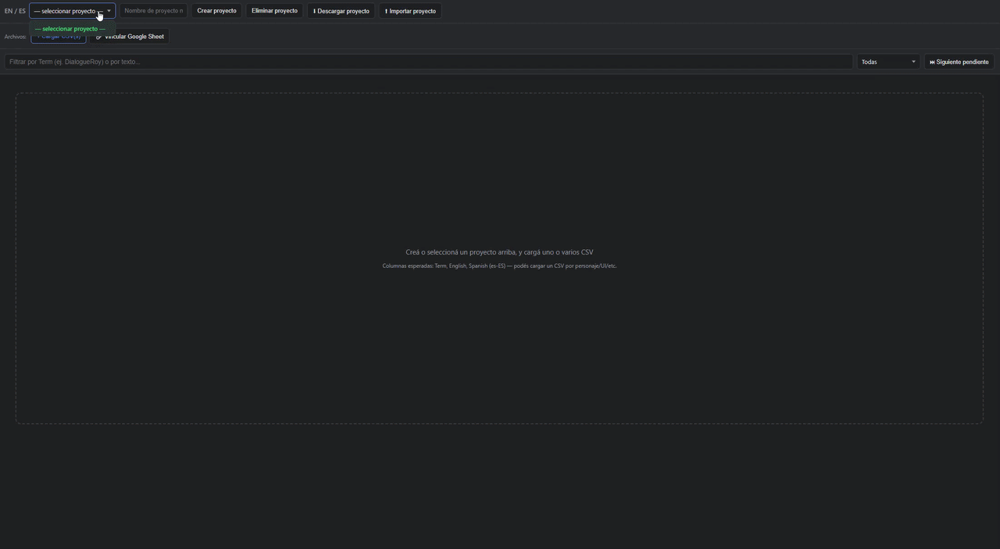
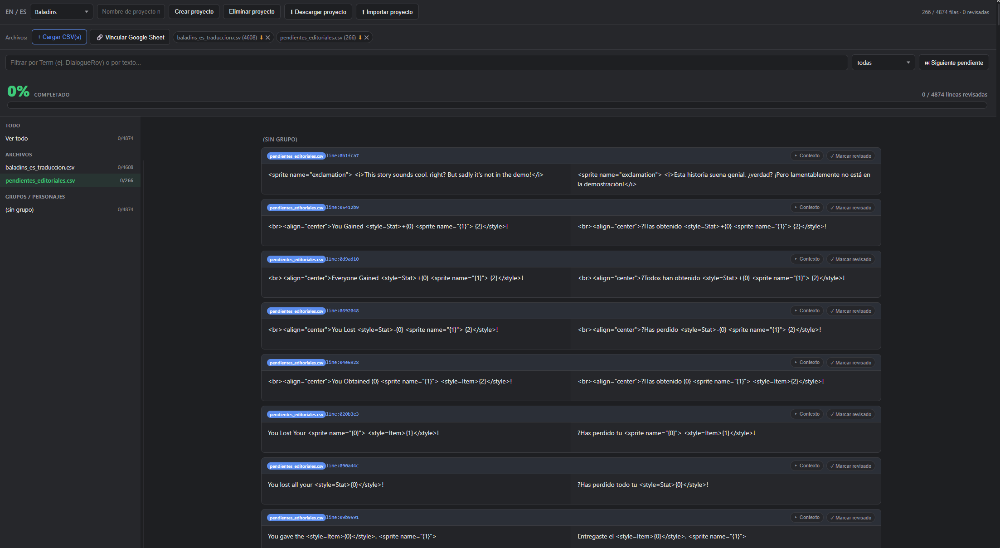
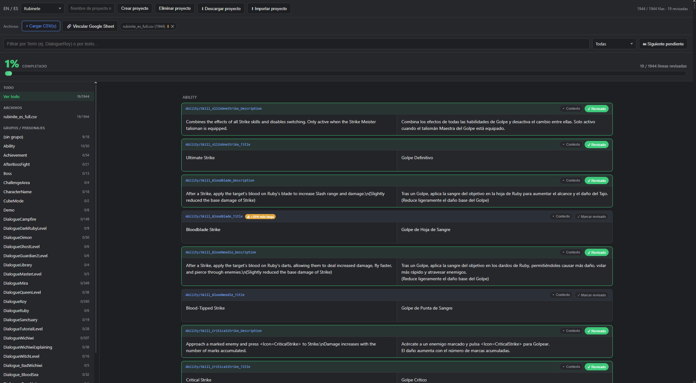

Herramienta local para traductores
App de revisión de traducciones
Una herramienta para revisar texto de juegos sin perder el original, el contexto ni el progreso del proyecto.
Cómo funciona
- Importa un CSV.El archivo contiene el texto original, su traducción y, cuando existe, su contexto.
- Revisa por bloques.Filtra por capítulo, personaje, estado o textos pendientes.
- Corrige con seguridad.El original se conserva; la traducción, notas y estado se editan por separado.
- Exporta para el parche.El CSV aprobado vuelve al generador del juego para producir los archivos finales.
La app en acción


